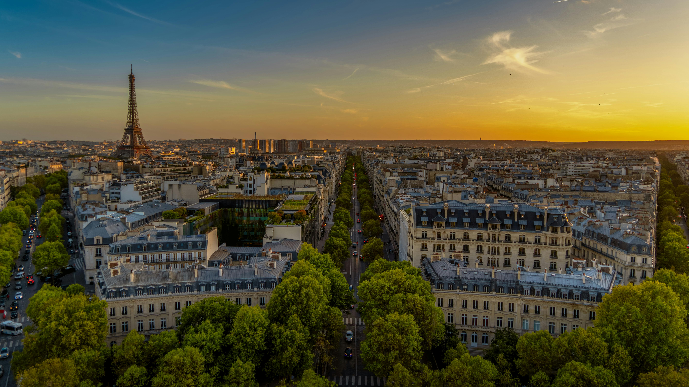
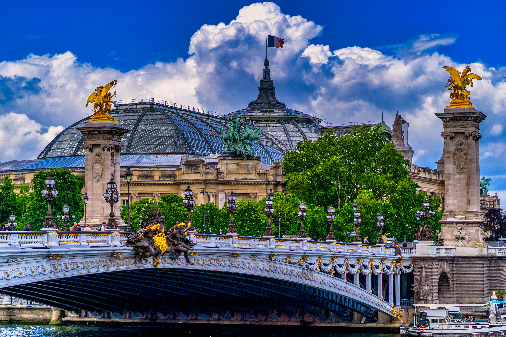

Esplora Parigi interattivamente
Esplora Parigi interattivamente

Scopri Parigi, sorta dall’antico insediamento gallico dei Parisii sulle rive della Senna. Conosciuta dai Romani come Lutetia, divenne in seguito il fulcro politico dei Capetingi, trasformandosi in un cuore pulsante di cultura medievale, università e cattedrali gotiche. Il suo sviluppo sulle rotte fluviali favorì commerci, scambi d’idee e la nascita di corporazioni che ancora oggi animano i quartieri storici.
Nei secoli la città fu teatro di rivolte, dal 1789 al maggio ’68, oltre a grandiosi piani urbanistici come quelli di Haussmann, che regalarono boulevard scenografici e inconfondibili facciate in pietra chiara. Il simbolo della modernità, la Torre Eiffel, inaugurata nel 1889, riflette l’ingegno francese e l’orgoglio nazionale. Oggi Parigi è Patrimonio UNESCO per le rive della Senna e continua a ispirare artisti, designer e sognatori di tutto il mondo.
Rivoluzione, Belle Époque e Rinascita

Dalla presa della Bastiglia ai fasti napoleonici, Parigi si trasformò nel laboratorio politico d’Europa. La Belle Époque portò caffè letterari, cabaret e l’Esposizione Universale del 1900. Le due Guerre Mondiali segnarono la città ma non spensero la sua anima: la Liberazione del 1944 accese nuovamente le luci sui boulevard.
Restauri, musei all’avanguardia e grandi progetti – come il Centre Pompidou e la piramide del Louvre – hanno consacrato Parigi capitale mondiale dell’arte e dello stile. Oggi è un mosaico di quartieri, dai vicoli bohémien di Montmartre alle architetture avveniristiche della Défense, pronto ad accogliere ogni viaggiatore.
Ogni epoca ha lasciato un segno visibile: camminare per Parigi è come sfogliare un libro di storia a cielo aperto, dove ogni edificio racconta una pagina diversa del passato. Dai rivoluzionari agli impressionisti, ogni angolo conserva l'eco di un cambiamento.